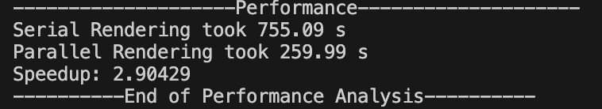

showcase of project 3b: ray tracing 2
by tracy pham and mary duong
sample scenes
spheres2.txt
bear.txt

outdoor.txt
test_reasonable.txt
bottle.txt
arm-reach.txt
arm-top.txt
dragon.txt
basic features
1. camera placement, changing in x, y, and z coordinates
original camera position (-4, 2, -3)
(-6, 2, -3)

(-2, 2, -3)

original camera position
(-4, 4, -3)
(-4, 1, -3)
original camera position
(-4, 2, -6)

(-4, 2, 0)

2. film resolution & aspect ratio (in 300x300, 300x500, and 1000x200)
3. user specified background colors
black background
orange background

blue background

pink background

4. lighting
ambient lighting only
point lighting only

directional lighting only
mix of all 3
5. spheres (multiple spheres in scene)

other basic features displayed in scenes
- triangles (both with and without vertex normals)
- shadows
- reflections and refractions
- recursion to a bounded depth
additional features implemented
1. spot light (5 points)
example from spot_sphere.txt
2. parallelism (10 points)
How to compile and run this on Visual Studio Code on MacOS and Windows: g++-15 -fopenmp -std=c++14 rayTrace_vec3.cpp -o ray
How to compile and run on Visual Studio 2022:
- make sure configuration is on active (release)
- Project Properties > Configuration Properties > C/C++ > Change Open MP Support to Yes (/openmp)
- Configuration Properties > Debugging > Include .txt file names in Command Arguments
speed up for spheres2.txt

speed up for arm-top.txt, cut from 14ish minutes to 5 minutes

speed up for arm-reach.txt, cut from 10+ minutes to 54 seconds

speed up for dragon.txt, cut from hours (maybe even days) to 10 minutes
(did not include serial rendering due to VERY large file size)